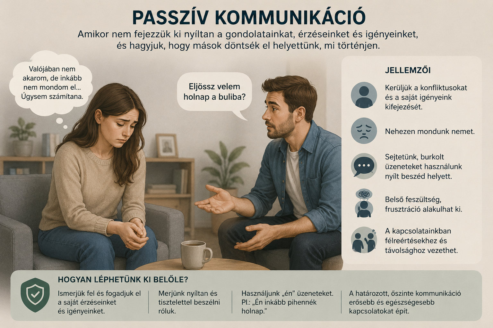

A kommunikáció az emberek közötti információcsere egyik legfontosabb formája. Segítségével kifejezhetjük gondolatainkat, érzéseinket és véleményünket. A megfelelő kommunikáció hozzájárul a jó emberi kapcsolatok kialakításához, a konfliktusok megoldásához és az együttműködéshez. A kommunikáció nemcsak szavakkal történhet, hanem testbeszéddel, mimikával és hangszínnel is.
A kommunikáció fő módjai a következők:
- Az agresszív kommunikáció során az ember a saját érdekeit mások fölé helyezi.
- A passzív kommunikáció esetén valaki nem meri nyíltan kifejezni a véleményét.
- A manipulatív kommunikáció rejtett módon próbál hatni másokra.
- Az asszertív kommunikáció során az ember őszintén és tisztelettel fejezi ki érzéseit és igényeit.
Kommunikációs stílusok (h2)
Passzív kommunikáció
Asszerív kommunikáció
Agresszív kommunikáció
